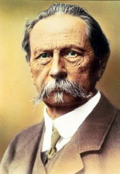
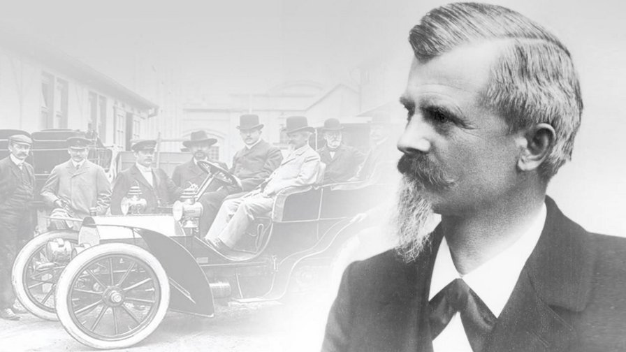
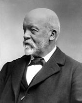
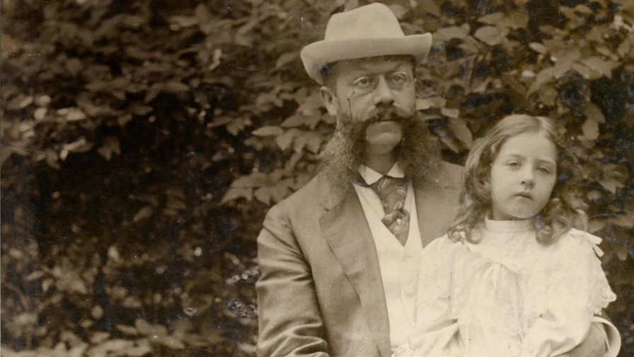

About us
Karl Benz
Karl Benz was born Karl Friedrich Michael Vaillant, on 25 November 1844 in Mühlburg, now a borough of Karlsruhe, Baden-Württemberg, which is part of modern Germany, to Josephine Vaillant and a locomotive driver, Johann Georg Benz, whom she married a few months later. According to German law, the child acquired the name "Benz" by legal marriage of his parents Benz and Vaillant.[1][2][3][4] When he was two years old, his father died of pneumonia,[5] and his name was changed to Karl Friedrich Benz in remembrance of his father.[6]
Despite living in near poverty, his mother strove to give him a good education. Benz attended the local Grammar School in Karlsruhe and was a prodigious student. In 1853, at the age of nine he started at the scientifically oriented Lyceum. Next he studied at the Poly-Technical University under the instruction of Ferdinand Redtenbacher.
Benz had originally focused his studies on locksmithing, but he eventually followed.

Maybach
Wilhelm Maybach was born in Heilbronn, Baden-Württemberg in 1846, the son of a carpenter and his wife Luise. He had four brothers. When he was eight years old the family moved from Löwenstein near Heilbronn to Stuttgart. His mother died in 1856 and his father in 1859.
After his relatives published an announcement in the Stuttgarter Anzeiger newspaper, a philanthropic institution at Reutlingen took in Maybach as a student. Its founder and director, Gustav Werner, discovered Maybach's technical inclination and helped to stimulate his career by sending him to the school's engineering workshop. Maybach was heading for a career in Industrial design and took extra classes in physics and mathematics at Reutlingen's public high school.
By the time he was 19 years old, he was a qualified designer working on stationary engines. His workshop manager, Gottlieb Daimler, then 29, noticed his efforts and took him on as his main assistant, a post he held until Daimler's death in 1900.

Gottieb
Gottlieb Wilhelm Daimler was the son of a baker named Johannes Däumler (Daimler) and his wife Frederika, from the town of Schorndorf near Stuttgart, Württemberg. By the age of 13 (1847), he had completed six years of primary studies in Lateinschule and became interested in engineering.
After completing secondary school in 1848, Daimler had trained as a gunsmith under Master Gunsmith Hermann Raithel. In 1852 he ended the training with the trade examination.[3][4] He graduated in 1852, passing the craft test with a pair of engraved double-barreled pistols.[4] The same year, at eighteen, Daimler decided to take up mechanical engineering, abandoning gunsmithing,[4] and left his hometown.
Daimler enrolled at Stuttgart's School for Advanced Training in the Industrial Arts, under the tutelage of Ferdinand von Steinbeis. Daimler was studious, even taking extra Sunday morning classes. In 1853, Daimler, with Steinbeis' assistance, got work

Emil jellinek
Jellinek was born in Leipzig, Germany, the son of Dr Adolf Jellinek (sometimes known also as Aaron Jellinek). His father was a well-known Czech-Hungarian rabbi and intellectual in the Jewish collective around Leipzig and Vienna. Jellinek's mother, Rosalie Bettelheim (born 1832 in Budapest, died 1892 in Baden bei Wien), was an active rebbitzen. He had two brothers, both of whom achieved fame: Max Hermann Jellinek as a linguist, and Georg Jellinek as an international law teacher. His sisters were Charlotte and Pauline.
The family moved, shortly after Jellinek's birth, to Vienna. He found paying attention to school work difficult and dropped out of several schools including Sonderhausen. His parents were displeased with his performance, while Jellinek began to indulge in practical jokes.the son of Dr Adolf Jellinek (sometimes known also as Aaron In 1870, when he was 17, his parents found him a job as a clerk in a Moravian railway company.
